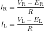
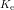

まずは対象となるロボットを決めます。 平面を移動する移動ロボットの作り方にはいろいろありますが、 ここでは対向２輪型(２輪駆動１キャスタ)のロボットを対象とします。 対向２輪型とは、左右の独立な駆動輪とひとつのキャスタのみで構成できる簡単な移動方法です。 作るのが簡単で、制御も容易、自由度も高い、制御屋さんにも設計屋さんにもみんなに易しい方式、ということで採用しました。 動力としては、DCモータを想定します。
このロボットの制御モデルを作りたいのですが、実際のロボットを厳密にモデル化することは困難です。 そこで次のような仮定をします。
駆動系をモデル化します。モータの電気系は等価回路は図1のように抵抗とモータの逆起電力であらわすことができます。 この等価回路からモータに流れる電流は次のようになります。
| 図1 モータの等価回路 |
次にモータの電気系が機械系に与える影響を見てみましょう。
駆動系は図2のように、モータに半径 のタイヤがつながっているものと考えます。
のタイヤがつながっているものと考えます。
| 図2 駆動系のモデル |
モータに発生するトルクは、モータに流れる電流に比例します。 その比例定数をとすると
となります。これから、ロボットに実際に加わる力は以下のようになります。
この力がロボットに伝わり、ロボットが移動するわけです。
今度は逆に機械系が電気系に与える影響を考えます。 ロボットが動き、右と左のタイヤがそれぞれで回転したとします。 このときのモータの角速度は
です。モータに発生する逆起電力はモータの角速度に比例します。 このときの比例定数は、単位系を適切に設定している場合です。 したがって、
となります。
次にロボットの運動方程式を立てます。 ロボットは図3のような大きさの質量、慣性モーメントの剛体と仮定します。
| 図3 ロボットのモデル |
この運動方程式は次のようになります。

ロボットがこのような運動をしているときの、 タイヤの回転速度について考えてみましょう。
対向２輪型のロボットの場合、図4のように円弧運動をしています。
| 図4 ロボットの移動 |
微小時間の間に図4のように動いた場合、ロボットの速度と角速度は
と表すことができます。これから、
となることがわかります。
以上のことをまとめると図5のようなブロック図で表すことができます。
| 図5 制御モデル |
このモデルは2入力2出力なので、少し複雑です。 もう少し簡単になるように次のような変換をします。
この様な変換によって、ロボットのモデルを下のように書き直すことができます。
| 図6 対角化した制御モデル |
このモデルをよく見ると、モデルの中に現れる行列がすべて対角成分のみとなっており、 対角化できていることがわかります。 これは速度と角速度を2つの独立な制御系として扱うことができるということを意味しています。
ここまでで、ロボットの速度と角速度は独立に制御可能であることがわかりました。 そこで、ロボットのコントローラも速度制御器と角速度制御器の2つの独立な制御器に分離してしまいましょう。 このような考えに基づき制御器も含めたロボットのモデルは図7のようになります。
| 図7 制御器のモデル |
経路制御器は、モータの速度を直接扱うのでなく、速度と向きの目標値を扱います。 なぜ角速度ではなく向きの目標値をとっているのかというと、 実際に角速度の制御器を作成してみたところ、どうパラメータ調整しても振動がひどく、うまくいかなかったからです。 おそらく、タイヤの回転バックラッシュの影響や、ロータリーエンコーダの分解能が十分で角速度の検出精度が十分でなかった ためと考えられます。 角度の制御は比較的うまくいったのでこちらを採用しました。 天地人の向きの制御にはPIDコントローラを使用しています。